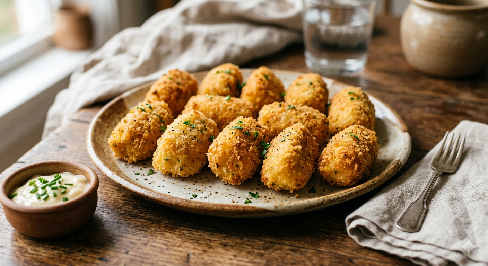

Chicken Croquetes

Description
Croquetas is a tipical Spanish dish that you can find in every home, bar and restaurant, from the cheap terrace on the beach from the top cusine restaurant with 3 month waiting list.
Traditionally it was a dish that was made out of the leftovers from big meals: stew, roasted chicken or other kind of meat. However, as it takes some time to prepare, I usually buy one or two roasted chickens just for doing croquetes and I freeze the 50-140 croquetes that I get from them.
As I said before, I do them with roasted chicken, my favorite ones. This recipe will focus on this specific kind. However, feel free to check other ones like "cocido" (stew), "jamon" (ham), "bacalao" (cod) or vegeterian ones like spinach or mushrooms.
Ingredients
- The meat of 1 roasted chicken
- 80g of butter
- 80g of flour
- 1 onion
- 1 liter of milk (I use cow milk but feel free to use any vegetarian option)
- Salt
- Pepper
- Nutmeg
- 2 eggs
- Breadcrumbs
- Frying oil
Steps
- Pass the meat of your chicken into a food processor to get a paste of chicken and set aside. Pass separetly the ognion into the food processor.
- In a pan at medium-high heat add the butter. When melted add the flour and mix until the mix start to get brownish, that means your flour is toasted.
- In the same pan add the ognion and mix well. Then add the chicken and incorporate everything together.
- Start adding the milk in the mix and mixing little by little. When all the milk is in, let it cook for 15 min or until the mix starts to be consistent.
- Set aside the mix in a large covered container and let it rest 24h in the fridge.
- After said time, the mix will be dense and you can roll the croquetes.
- Mix the eggs in a plate and set another plate with the breadcrumbs. Roll each croqueta into the egg first and into the breadcrumbs after.
- Right now you have the option to fry directly on a pan with frying oil if you want to consume them in the moment. Otherwise, set them in a plate to the freezer. Once freezed, you can put them all inside a plastic bag to store in the freezer for up to 6 months, but they will be gone way sooner than that.